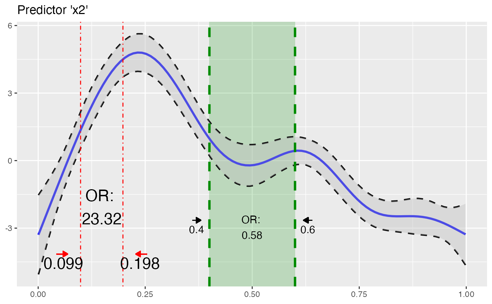

This function inserts calculated odds ratios of GAM(M)s into a plot of a GAM(M) smoothing function.
insert_or( plot_object = NULL, or_object = NULL, line_col = "red", line_size = 1.2, line_type = "solid", line_alpha = 1, text_alpha = 1, text_size = 4, text_col = "black", rect_alpha = 0.5, rect_col = NULL, rect = FALSE, arrow = TRUE, values = TRUE, values_yloc = 0, values_xloc = NULL, or_yloc = 0, arrow_length = NULL, arrow_yloc = NULL, arrow_col = NULL, arrow_xloc_r = NULL, arrow_xloc_l = NULL )
| plot_object | A |
|---|---|
| or_object | A data.frame as returned from |
| line_col, line_alpha, line_type, line_size | Aesthetics of vertical lines. |
| text_col, text_alpha, text_size | Aesthetics of inserted values. |
| rect_col, rect_alpha | Aesthetics of shaded rectangle. |
| rect | Whether to print a shaded rectangle between the vertical lines. |
| arrow | Whether to print arrows above the inserted values. |
| values | Whether to print predictor value information nearby the inserted vertical lines. |
| values_xloc | x-axis location/shift of values relative to their vertical line. Default to 2\% of x-axis range. |
| or_yloc, values_yloc | Specifies y-location of inserted odds ratio values. Relative to plotted y-axis range. A positive (negative) value will place the the text higher (lower). |
| arrow_xloc_r, arrow_xloc_l, arrow_yloc, arrow_length, arrow_col | Axis placement options of inserted arrows. Relative to respective axis ranges. |
ggplot2
The idea behind this function is to add calculated odds ratios of fitted GAM
models (or_gam()) into a plot showing the smooth function (plot_gam) of
the chosen predictor for which the odds ratio was calculated for. Multiple
insertions can be made by iterative calling the function (see examples).
Right now the function only accepts inputs from or_gam() objects with
slice = FALSE. If you want to insert multiple odds ratio values, call the
function multiple times.
library(oddsratio) library(mgcv) fit_gam <- gam(y ~ s(x0) + s(I(x1^2)) + s(x2) + offset(x3) + x4, data = data_gam) # fit model # create input objects (plot + odds ratios) plot_object <- plot_gam(fit_gam, pred = "x2", title = "Predictor 'x2'") or_object1 <- or_gam( data = data_gam, model = fit_gam, pred = "x2", values = c(0.099, 0.198) ) # insert first odds ratios to plot plot_object <- insert_or(plot_object, or_object1, or_yloc = 3, values_xloc = 0.04, line_size = 0.5, line_type = "dotdash", text_size = 6, values_yloc = 0.5, arrow_col = "red" ) # calculate second odds ratio or_object2 <- or_gam( data = data_gam, model = fit_gam, pred = "x2", values = c(0.4, 0.6) ) # add or_object2 into plot insert_or(plot_object, or_object2, or_yloc = 2.1, values_yloc = 2, line_col = "green4", text_col = "black", rect_col = "green4", rect_alpha = 0.2, line_alpha = 1, line_type = "dashed", arrow_xloc_r = 0.01, arrow_xloc_l = -0.01, arrow_length = 0.01, rect = TRUE )